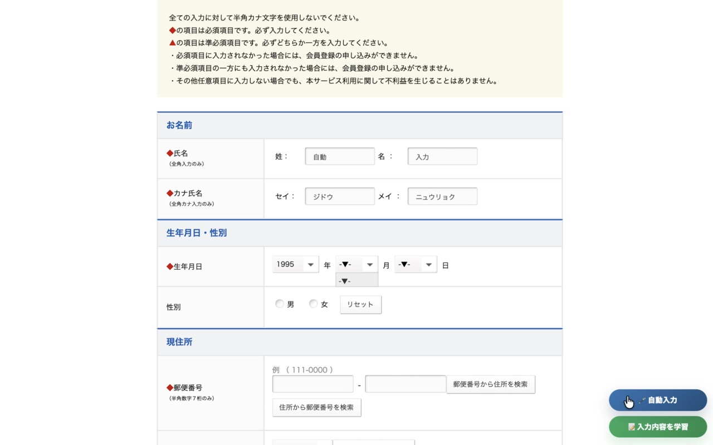
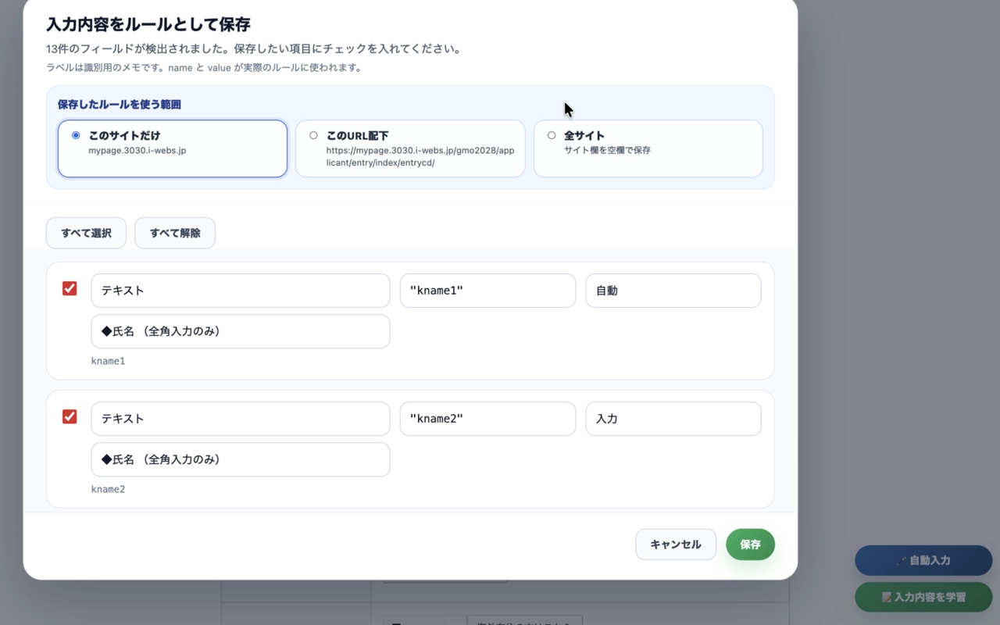
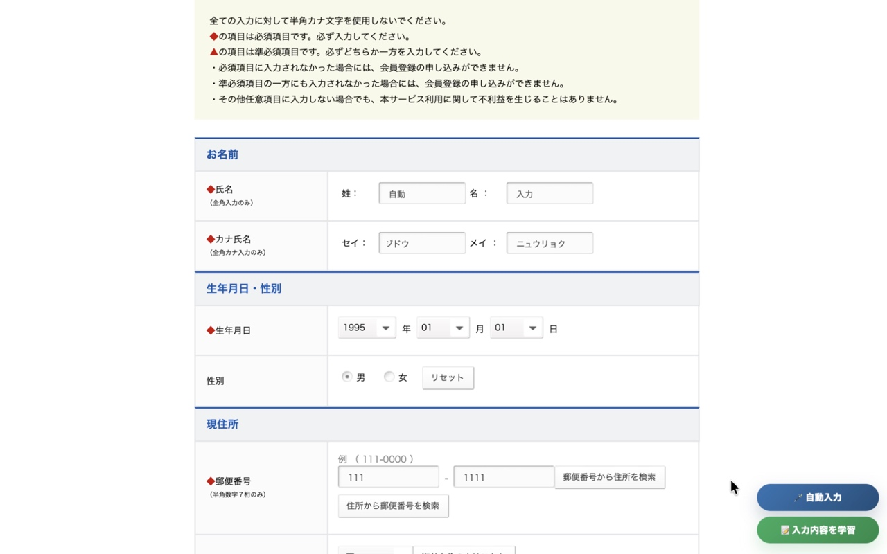

データについて
入力した内容はChromeの中だけに保存されます。
- 保存先はあなたのブラウザの中だけです。外部のサーバーには一切送りません。
- パスワードや非表示フィールドは学習の対象外です。
- 設定画面からいつでもルールを確認・編集・削除できます。
- アンインストールすれば保存データもすべて消えます。
Chrome Extension
名前・住所・学校名など、フォームで毎回入力する情報を一度学習させるだけ。次からは自動で入力されます。
使い方
いつも通りフォームを入力します。ページ右下にボタンが表示されます。

保存したい項目を選んで保存するだけ。次回から使い回せます。

「自動入力を実行」を押すと、前回の入力内容がまとめて入力されます。

データについて
主な機能
広告・トラッキングなし
Support
不具合の報告や機能のリクエストは GitHub からお送りください。